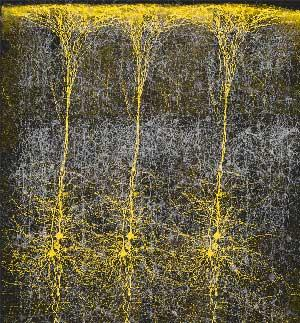
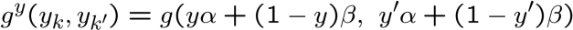

Markov Models in Computer Vision
Andrew Blake, Microsoft Research Cambridge
Modern probabilistic modelling has revolutionized the design and
implementation of machine vision systems. There are now numerous
instances of systems that can see stereoscopically in depth, or separate
foreground from background, or accurately pinpoint objects of a
particular class, all in real time. Each of those three vision
functionalities will be demonstrated in the lecture. The underlying
advances owe a lot to probabilistic frameworks for inference in images.
In particular, the Markov Random Field (MRF), borrowed originally
from statistical physics, first appeared in image processing in the 70s. It
has staged a resounding comeback in the last decade, for very
interesting reasons.
Seeing as an intelligent behaviour
Sony "Qrio" humanoid
Robot car
Visual cruise control
Live Object
Xbox Natal
1



Seeing: hardware or software?
Hypercolumns in visual cortex
(Mountcastle - 1957, Hubel & Wiesel - 1962)
An account of how vision might work
Having the ability to test hypotheses
Dealing with the ambiguity of the visual world
Having the ability to “fuse” information
Having the ability to learn
Reasoning with probabilities
2
Machines that see
... perceptions are predictive, never entirely certain, hypotheses of what may be out there.
R.L. Gregory, psychologist, 1966
... the essential problem of perception ... is how reliable knowledge of the world around us is
extracted from a mass of noisy and potentially misleading sensory messages.
What I am suggesting is that the statistical step of extracting knowledge is often solved
before we consciously perceive anything at all, and that is why our perceptions are usually
reliable.
HB Barlow, neurophysiologist, 1980.
As Grenander has emphasized, a very useful test for a class of models is to synthesize from
it, i.e. choose random samples according to this probability measure and to see how well
they resemble the signals.
D. Mumford, mathematician, 2002.
“Particles” for head location
3
Tracking against clutter 2
Visual ambiguity in the location of a head
z
z
1
M
x
4


.. What is hard about vision -- ambiguity
-- what you want from an interactive segmentation:
-- what you get from local analysis of colour and texture:
... more ambiguity
true depths
computed
depths
Stereo Vision – local analysis
(Scharstein & Szeliski 2002)
5


Fusion of cues: sound and visual
appearance
Sound only
Appearance only
Fusion with sound and appearance
Learning by example
faces
(Viola & Jones, 2001)
non-faces
6


An account of how vision might work
Having the ability to test hypotheses
Dealing with the ambiguity of the visual world
Having the ability to “fuse” information
Having the ability to learn
Reasoning with probabilities
How vision might work: digging deeper
Remainder of lectures focus on one or two key problems in
vision:
-- principally the problem of segmentation
-- considered in probabilistic/optimization framework
-- also look briefly at stereo vision
-- all peppered liberally with some mainstream apps.
7
Segmentation (Berkeley)
... Better defined problem: foreground segmentation
Bayesian Matting (Chuang et al. 01)
8

Mixture of Gaussian colour priors
Training data in Colour Space
Learned mixture of Gaussian Models
MAP inference of
(Ruzon and Tomasi 99; Chuang, Curless, Salesin, Szeliski 01)
... Segmentation in camouflage
9

Need for spatial priors
Data in Colour Space
Mixture of Gaussian Models
-- f/b distributions intertwined
Connecting up pixels
How can you express coherence in a way that is practical?
N
N
10
1st order with stochastic observations – Hidden Markov Model
HMMs – ubiquitous in speech recognition
tractable –
(Rabiner, 89; Jelinek 98) HTK (Young,Woodland et al. 97)
Dynamic Programming
etc.
time
Temporal HMMs in vision
11


2D Markov model?
Tree of connected pixels
Markov Network (1st order)
(Veksler 2005)
(Geman & Geman 84; Besag, 1974,
1986)
neighbours of i
Independence:
where
2D Markov Model 1st order Example
Ising Model
Binary variables:
Joint probability distribution:
where
and
12

2D Markov simulation (Swensden Wang MCMC)
Ising Model
K=0.4
K=0.5
K=0.55
2D Hidden Markov Model
observation
prior
likelihood
13

Simple segmentation --- Ising prior
MRF – expressed as additive energy terms
where “energy”
and
colour
observations
(-ve) log-prior V(x)
with
and
MAP
energy/cost minimization
?? How to compute
ie
Segmentation artefacts --- Ising prior
(Boykov and Kolmogorov ICCV 2003)
?? How to overcome artefacts
14


Boykov-Jolly contrast-sensitive segmentation
(Boykov and Jolly 2001; Rother et al. 2004; Li, Shum et al. 2004 )
• Conditional Random Field -- CRF
(Lafferty et al. 2001; Kumar and Hebert 2003)
with
where now
log-”prior” V(x,z)
data-dependence
Labelled database
Available online: http://research.microsoft.com/vision/cambridge/segmentation/
15 training and 35 test images, eg:
image
user trimap
expert trimap
Training error for
:
Error (%) over training set:
25
(see also Blake et al. ECCV 2004)
15


GrabCut: partially supervised inference
(Rother, Kolmogorov and Blake, Siggraph 2004;)
Iteration 1)
Iteration 2)
Iteration 3)
Iteration 4)
Evaluation of Grabcut over database
Input Image Ground Truth
Trimap
Bimap
Boykov and Jolly
GrabCut
Error Rate: 1.36%
Error Rate: 2.13%
User Interactions - considerably reduced
Error rate: modest increase
GrabCut – Interactive Foreground Extraction
14
16


Straightforward examples
GrabCut – Interactive Foreground Extraction
10
Difficult Examples
Fine structure
No telepathy
Camouflage &
Low Contrast
Selected
Rectangle
Result
GrabCut – Interactive Foreground Extraction
11
17

MAP estimation for Markov Random Fields
– Energy Minimization
Generally NP-hard, so approximate:
Simulated annealing [Metropolis, Rosenbluth, Rosenbluth, Teller and Teller, 1953]
Gibbs sampling [Geman and Geman 1984]
Iterated conditional Modes [Besag 1986]
Approximate variational extremum [Mumford and Shah 1985,9]
Graduated nonconvexity [Blake and Zisserman 1987]
Graph cut [Greig, Porteous and Seheult, 1989]
Loopy Belief Propagation [Freeman and Pasztor, 1999]
“Modern” graph cut [Boykov, Veksler and Zabih, 2001]
Graph Cut engine for Markov segmentation
binary x
Source x=1
f (x =0,z )
i
i
i
Minimum Cut
fi(0)
fi(0)
gi,j(0,1)
=gi,j(1,0)
gk,k’
f
f
i(1)
i(1)
g
Sink
x=0
i,j(0,0)=gi,j(1,1)=0
18
Ford-Fulkerson Min-cut/Max Flow
Source x=1
Minimum Cut
gi,j
Sink
x=0
* Max flow you can push through the network = min cut
-- ie capacity of cut with smallest total capacity
* Links saturated by max flow = links separated by min cut
Example: optimization as graph cut problem
Problem:
minx E = f1(x1) + f2(x2) + g(x1,x2)
where: f1(0)=2; f1(1)=7; f2(0)=5; f2(1)=3; [all weights +ve]
g(0,1)=g(1,0)=1; g(0,0)=g(1,1)=0; [canonical form]
source x=1
Graph:
2
5
1
x
x
1
2
Trial Solution x =1, x =0
1
2
7
3
Energy: E(x , x ) = 7+1+5 = 13
1
2
sink x=0
19
Example: graph cut optimization – min cut/max flow
Solve (exactly) by augmenting flow:
source x=1
source x=1
source x=1
source x=1
0 2
0 5
2 2
0 5
2 2
3 5
2 2
4 5
01
x
x
01
x
x
01
x
x
11
x
1
2
x
1
2
1
2
1
2
0 7
0 3
2 7
0 3
2 7
3 3
3 7
3 3
sink x=0
sink x=0
sink x=0
sink x=0
Solution from saturated paths
x =0, x =1 E(x , x ) = 2+1+3 = 6
1
2
1
2
Augmenting flow
[Boykov and Kolmogorov, PAMI 2004]
-- Breadth-first search for augmenting paths
-- Augment flow along non-saturated paths
-- Termination if weights all positive
-- Typical complexity O(n3) [Dinic 1970]
-- Special algorithms for vision problems – wide, shallow
graphs
http://www.adastral.ucl.ac.uk/~vladkolm/software.html
20
Graph cut – submodularity
What energy functions E can be minimized by graph cut?
-- Augmenting paths terminates finitely if all
costs +ve.
fi(0)
-- WLOG reduce to canonical form
gi,j(0,1)
define
D=g
=g
i,j(0,1)+gi,j(1,0) – gi,j(0,0)-gi,j(1,1)
i,j(1,0)
canonicalg
form:
i,j(0,0)=gi,j(1,1) 0;
fi(1)
gi,j(0,1)=gi,j(1,0) D/2;
f (x )¸ 0
i
i
-- Solvability if D¸ 0 [invariant to transfms of problem]
[Kolmogorov and Zabih 2004]
Regularity: achieving canonical form
[Kolmogorov and Zabih PAMI 2004]
Simplifying unary fi(xi ) :
m = min(fi(0 ), fi(1 ))
if m<0
fi(0) := fi(0) - m
-- reparameterization
fi(1) := fi(1) - m
??? Simplifying pairwise gi,j(xi ,xj ) :
21

... Regularity: achieving canonical form
[Kolmogorov and Zabih 2004]
Simplifying pairwise gi,j(xi ,xj ) :
g(0,0)
g(0,1)
0
g(0,1) -g(0,0)
g(1,0)
g(1,1)
g(1,0) –g(0,0)
g(1,1) –g(0,0)
0
0
0
0
g(1,0) –g(0,0)
0
g(1,0) –g(0,0)
g(1,1) –g(0,1)
-g(1,1) +g(0,1)
D
-- reparameterization
Graph cut – submodularity
Do they satisfy submodularity?
g(x,x’)
x
0
1
0 0
Ising prior
x’1 0
?
Ising with contrast sensitivity
?
22
Dynamic graph cut – Markov editing.
Boykov, Y., Jolly, M.P.: Interactive graph cuts for optimal boundary and region segmentation of objects in N-D
images. Proc CVPR 2001.
1)
2)
3)
4)
Dynamic graph cuts
(Boykov and Jolly, 2001; Kohli & Torr ICCV 2005)
Changing the unaries:
Re-use old flow with new Energy fn ???problem
Where flow exceeds capacity by c, reparametrise:
source
source
fi(0) := fi(0) + c
fi(0)
fi(0)+c
fi(1) := fi(1) + c
x
x
1
1
fi(1)
fi(1)+c
???Changing the pairwise potentials
sink
sink
23
Dynamic graph cuts
(Boykov and Jolly, 2001; Kohli & Torr ICCV 2005)
Changing the binaries:
Where flow, eg F2,1 exceeds capacity by e, reparametrise:
source s
source s
Fs,1
Fs,1+e
x
x
x
x
1
2
1
2
F
F
2,1
2,1 -e
F2,t
F2,t+e
sink t
sink t
-- then follow procedure for unary flow excess
??? what’s this good for
Dynamic graph cuts
(Kohli & Torr ICCV 2005)
details to follow.
24
Stereo matching – full depth
e
magI
ht
ig
R
Left Image
Stereo matching -- cost function
(Ohta & Kanade, 1985; Cox, Hingorani & Rao, 1996; Belhumeur 1996)
Minimize:
log-prior V(x)
log-likelihood U(x,z)
“Potts”
Note: x now integer valued
max disparity
1D DP: Dijkstra
?? 2D algorithm
25

Nonlinear image restoration
data
with
data
coherence
Image restoration
noise model
?? choice of g
Graph cut – expanded graph (Roy and Cox, ICCV 1998)
Problem graph of size n nodes, with k integer levels:
-- optimize by cutting graph of nk+2 nodes
f (x =3,z )
k
k
k
(Ishikawa, 03)
f (x =1,z )
i
i
i
1
i
?? g
26

Convexity constraint (general connectivity)
(Ishikawa 03)
Suppose:
then
must be convex
?? beyond convexity
Graph cut – ®-expansion
Alternative optimizer for
with
x2 {1,....,L}
– repeated binary optimization:
-- cycle over ® in the range of x :
?? escapes limitations on g
27

Submodularity – ®-expansion
(Kolmogorov and Zabih, PAMI 2004)
Back to integer-valued problems: restoration, stereo, Tapestry, obj-rec with parts.
Given:
y
giving
gy(y,y’)
0
1
0
g(x,x’) g(x,®)
y’
g(®,x’) g(®,®)
1
then regularity requires (diagonal subdominance):
g(x,x’) + g(®,®) · g(x,®) + g(® , x’)
satisfied by any metric g (since: g¸ 0; g(®,®)=0; triangle ineq)
-- eg Potts
Submodularity – ®-¯ swap
Alternative move – more expensive – more generality in model
Given:
y
giving
gy(y,y’)
0
1
0
g(¯,¯) g(®,¯)
y’
g(¯,®) g(®,®)
1
then regularity requires (diagonal subdominance):
g(
,
) + g(b,b) · g(
,b) + g(b,
)
class of g ?
satisfied by any semi-metric g (since: g¸ 0; g(
,
)=0)
-- eg
28

Energy bound for ®-expansion
(Boykov, Veksler and Zabih, PAMI 2001)
Problem as usual:
Global minimum
Local min under
-expansion:
Energy bound
where
?? bound for Potts
Energy bound – is it useful??
(Lempitsky, Rother and Blake, ICCV 2007)
Sample restoration problem:
?? useful bound
29
Results of stereo matching
(Woodford, Torr, Reid, Fitzgibbon 2008)
30